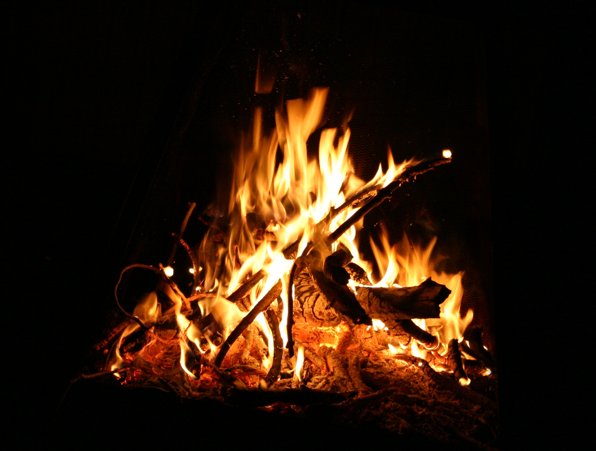

Eld
Eld är det fenomen som uppstår när en gas genomgår en koncentrationsstyrd, exoterm, kemisk reaktion som inbegriper oxidation (förbränning) av ett brännbart ämne, i teknika sammanhang benämnt bränsle.
Värme från reaktionen bidrar till förgasning och blandning av det brännbara ämnet och oxidationsmedlet, men per definition är temperaturen så hög att temperaturen ej längre är styrande för reaktionen.
Förbränningen sker således i kontaktytan mellan oxidationsmedlet och det brännbara materialet (glöd) eller brännbara gaser (flammor, eld).
Förbränning av kolhaltiga, flytande eller gasformiga ämnen ger flammor som lyser starkt av svartkroppsstrålning från mikroskopiska sotpartiklar medan förbränning av exempelvis vätgas ger genomskinliga, svagt lysande lågor.